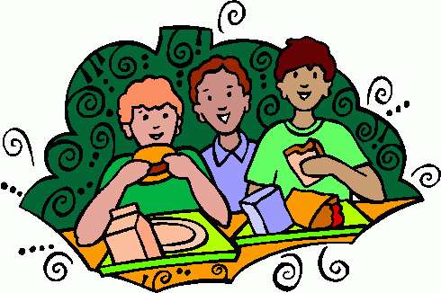

Lunch Break
Our school is a day school. Its working hours are from 10.10 a.m. To 4.30 p.m. We have four periods in the morning and four in the afternoon. There is a 30 minute break at 1.10 a.m. This is lunch hour for teachers and student. It is also play and gossip time for students. Towards the end of the fourth period itself, students become restive. Their attention is more on the watch than what the teacher is trying to teach. They eagerly wait for the bell. As soon as the recess bell goes, the calm of the school is broken. There is noise everywhere. Some students rush down the stairs pushing each other to reach the canteen first. Others could be seen sitting in the classroom and gobbling up their food. The younger ones could be seen roaming about eating their lunch. Soon there is great rush at the taps. Many students straight away rush to the playground. Others join them after finishing their lunch. The playground gets crowded and there is hardly any game possible. Yet students manage to play. Library is also filled to capacity during lunch hour. Many students could be seen browsing through the papers and magazines. Soon the time is over. The bell goes. Children rush to their classes and then the school becomes quiet again. Recess is the best part of the school day. Students and teachers all enjoy it.